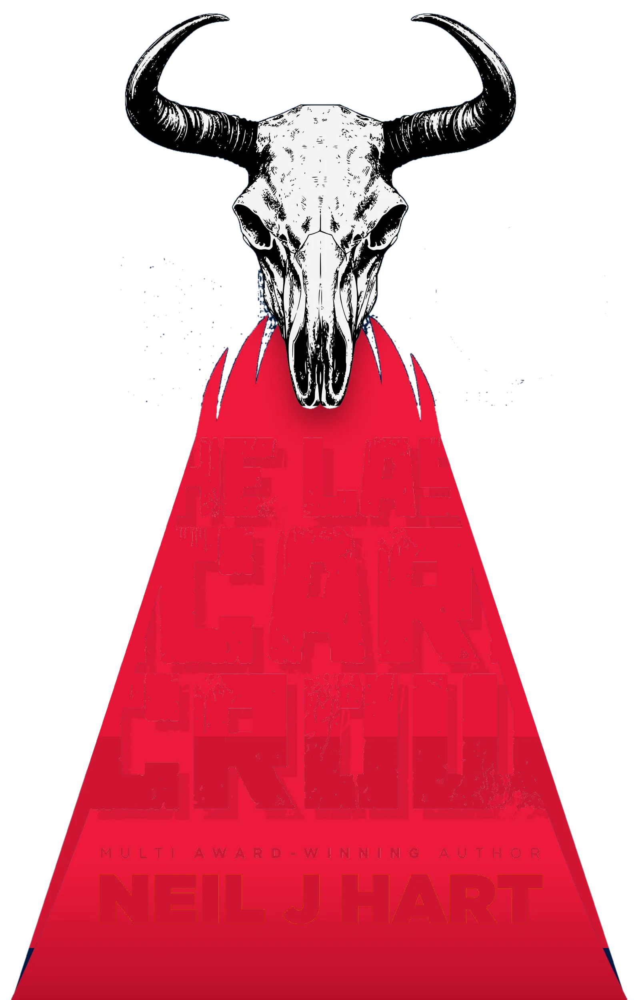
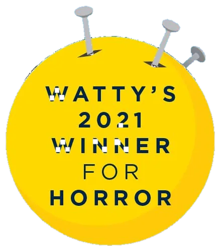
When the human race faces extinction,
the scarecrows will rise!
Come and find me
I spend most weekends behind a table at a comic con or book fair. Come and talk stories, grab some free swag, and get a personalised, signed copy.
- YALC, LondonYoung Adult Literature Convention
- Comic Con, Southampton
- Indie Book Fair, Wycombe
- Sugarpages Book Fair, Bristol
- Sugarpages Book Fair, Cardiff
- Oxford Indie Book FairTable N13
- The NightFair, Brighton
- Fiction Fest UK, Manchester2027
More 2027 dates in Birmingham, Bristol, Bournemouth, Cardiff, Warminster, Brighton, Nottingham, Cheltenham and Coventry.
Scarecrows of Coldharbour Farm
Return to Oz meets The Nightmare Before Christmas. A YA dystopian fantasy adventure where climate change has flooded the earth, destroyed humanity, and ushered in a grave new world. For ages 12 and up.
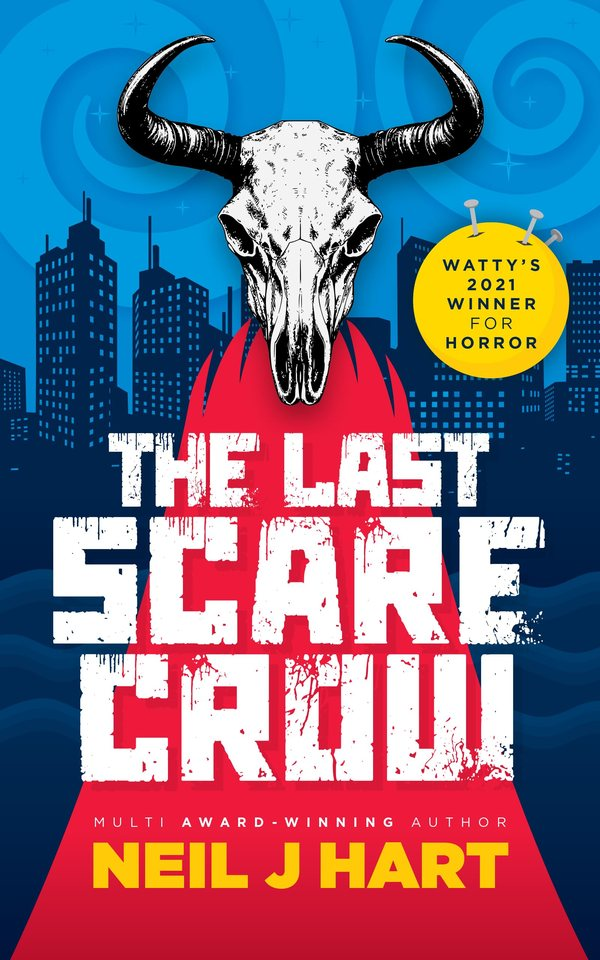
Book one
The Last Scarecrow
When the human race faces extinction, the scarecrows will rise!
Erin loved to build scarecrows. She made a dozen in all. Her Pa showed her how. But he’s dead now. Everyone is dead. Well… almost.
The Many Years Storm flooded the world, swept Erin’s brother out to sea, and turned her hilltop farm into a rapidly shrinking island. While hope remains, Erin must take her chances on the open ocean and find her brother. But she doesn’t have the knowledge to build a raft and there’s no one to ask except the last and most terrifying of all her scarecrows… Number Twelve!
Erin needs help. Scratch that. Erin needs a miracle.
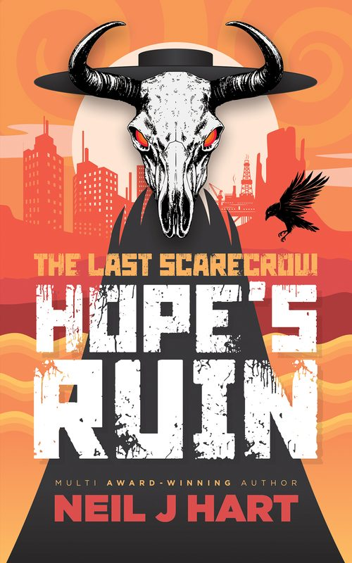
Book two
Hope’s Ruin
When the last shreds of hope turn to dust, the dead shall rise!
The oceans have retreated and a desiccated world now dwells beneath monstrous clouds that threaten a second storm. Erin knows it’s coming. She’s prepared for anything. But when an urgent knock rattles her door in the dead of night, she’s dragged into a grave new world governed by her darkest nightmares.
Return to Oz meets Mad Max.
Book three: Frozen Fire
“When all but our hearts have turned to ice… the reanimates will rise!” The cover reveal is on 31 October 2026.
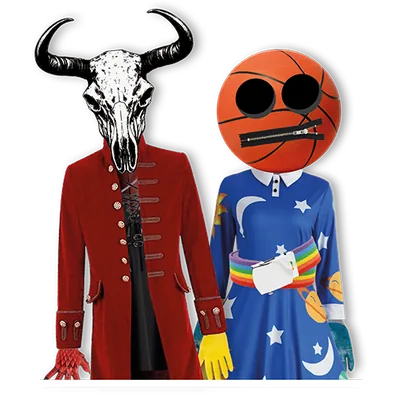
Scarecrows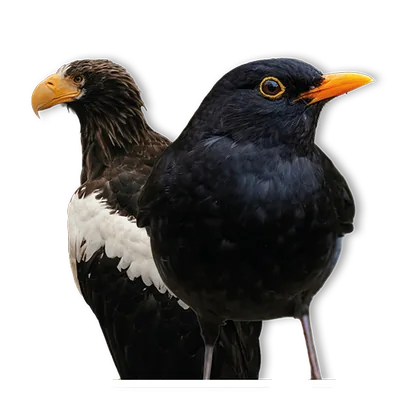
Birds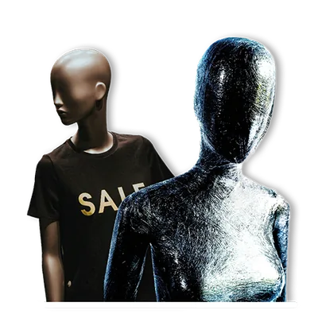
Mannequins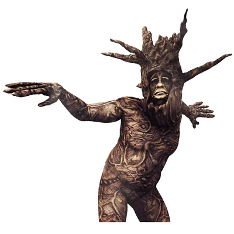
Wickermen
Two more worlds
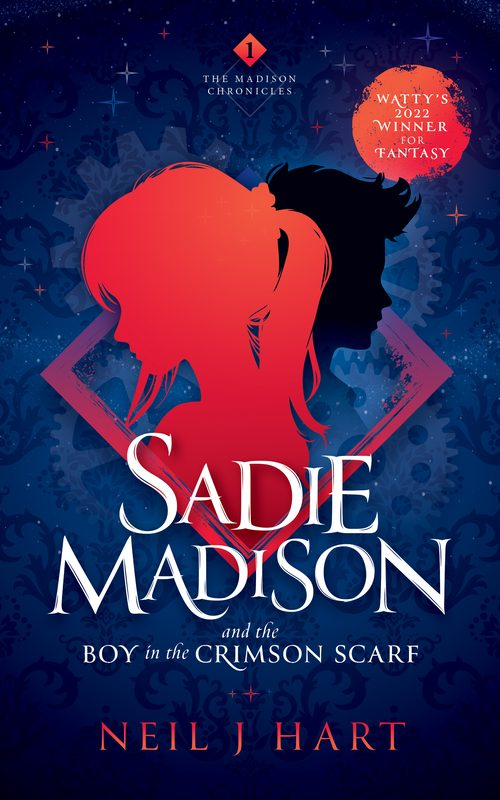
Sadie Madison and the Boy in the Crimson Scarf
Twelve-year-old Sadie plays a haunting piano melody, unheard for an age, and forges a strange companion from stardust and shadow. His Dark Materials meets City of Ghosts. Watty Award winner for Fantasy.
Waterstones · Amazon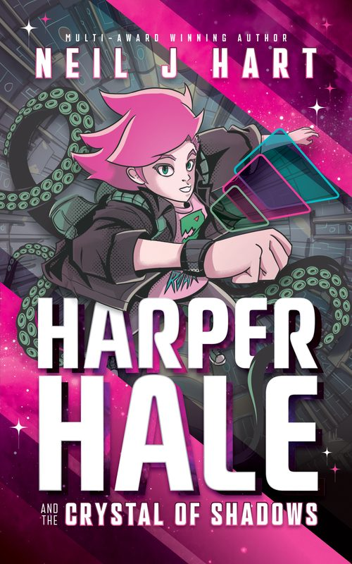
Harper Hale and the Crystal of Shadows
Quirky sci-fi fangirl Harper Hale becomes the first Earthling to enrol at the Galactic Institute, then gets classified: VOID. Adventure, mystery and magic are all on the curriculum.
Waterstones · AmazonHello. I’m Neil.
I grew up in Surrey, dancing and acting, building vast Lego cities and domino rallies, and inventing board games and secret societies. Ian Livingstone’s Fighting Fantasy books and Terry Pratchett’s Discworld made me fall in love with reading and writing.
In 2021 The Last Scarecrow won for Horror at the Wattpad Awards. I entered Sadie Madison in 2022 and won again, this time for Fantasy. I’m a graphic designer too.
- Fosters for Cats Protection
- Runs on coffee
- Cheese and cucumber sandwiches
- Tomb Raider collector
Signed by me, sent by me
Order signed paperbacks of every book straight from my Ko-fi shop.
Visit my shopEvery order comes with free swag: badges, stickers and bookmarks.